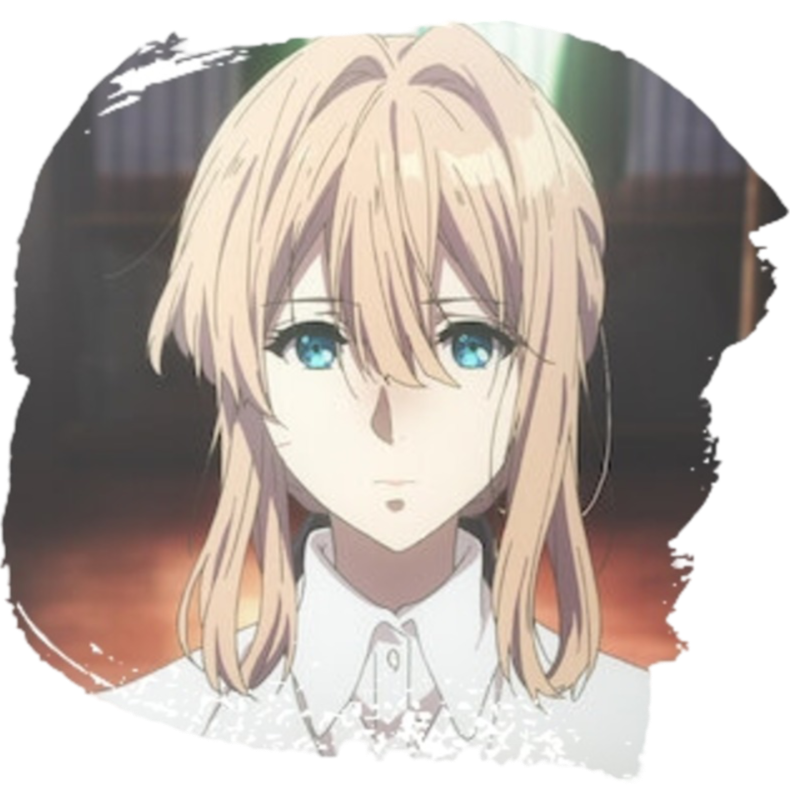
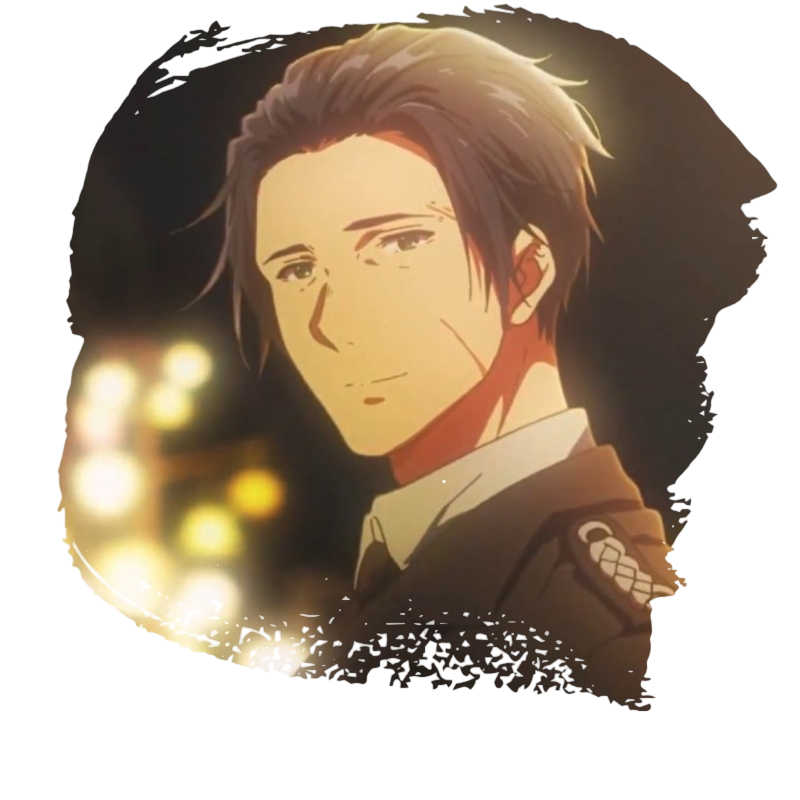
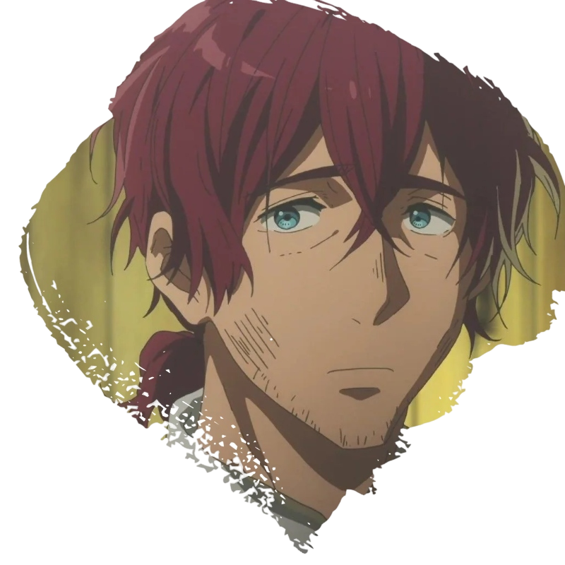
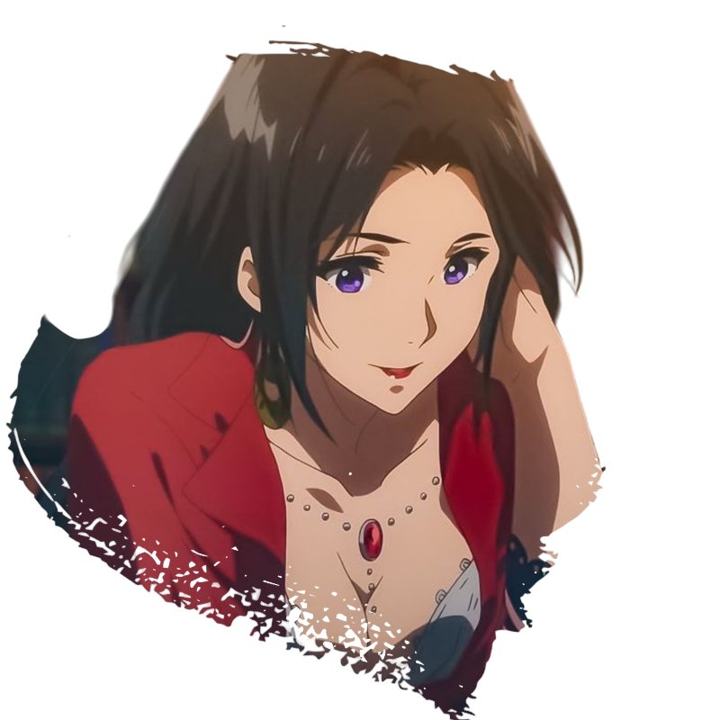
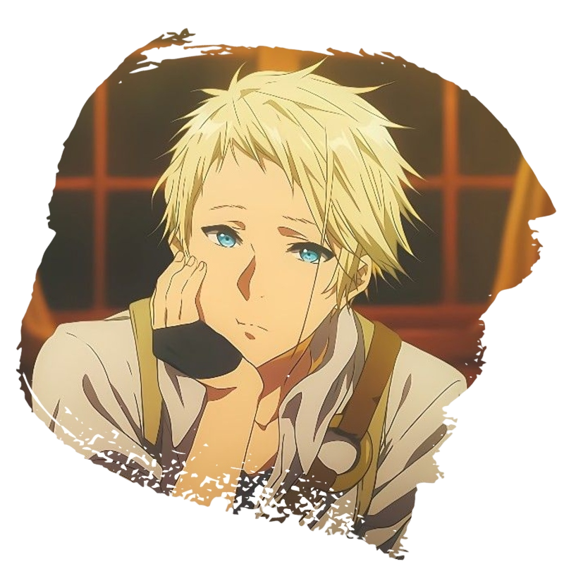
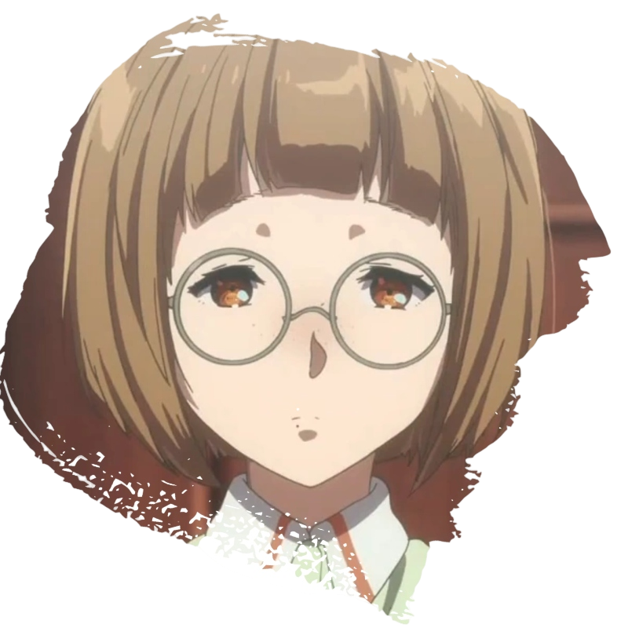

Los personajes de Violet Evergarden no solo cuentan historias, sino
que personifican emociones profundas y experiencias humanas. Cada uno
aporta una pieza única al mundo que Violet recorre, con sus propios
sueños, miedos y esperanzas.
Personajes
Violet EvergardenUna joven que transforma su dolor en cartas que conectan
corazones

Gilbert BougainvilleaEl hombre que le dio a Violet un propósito y un corazón por
descubrir

Claudia HodginsEl mentor bondadoso que guía a Violet hacia una nueva
vida

Cattleya Baudelaire
Una mujer apasionada que combina elegancia y empatía en cada
palabra

Benedict Blue
Un mensajero audaz con un estilo único y un corazón leal

Erica Brown
Una escritora tímida que encuentra confianza en el poder de las
palabras.

Iris CannaryUna joven llena de energía que persigue sus sueños con
determinación